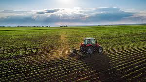

Agro forte, futuro sustentável: equilíbrio entre produção e meio ambiente.
Por trás de cada alimento da nossa mesa existe o calo nas mãos e o suor sob o sol. Mas o agro de hoje em dia carrega uma missão que vai além de abastecer o mundo ele precisa proteger nosso mundo que nos sustenta. 🌱"Agro forte, futuro sustentável" não é só um slogan. É a realidade é que solo e os rios secos significam o fim da própria natureza. Hoje, a tecnologia e o respeito à natureza andam juntos. Drones que evitam o desperdício de água e a plantação direta protege o solo. 🚜✨Produzir em harmonia com o meio ambiente é o único caminho possível. É um compromisso diário que transforma tecnologia em respeito e suor em vida. Só com um campo forte e consciente garantiremos uma terra viva para as próximas gerações. 🌎💚
Aqui estão algumas imagens do campo.

.jpeg)
A agricultura e o meio ambiente caminham juntos e o agronegócio moderno prova que é possível produzir alimentos, fortalecer a economia e ao mesmo tempo preservar os recursos naturais, adotando práticas como a agricultura de precisão, o uso de bioinsumos e a conservação do solo.